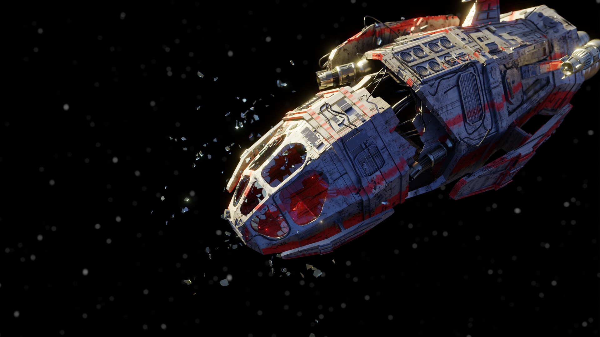

Trying to get through the Asteroids
As you try to avoid hitting any asteroids to get through, you try to find the Blue Crystal as well. While looking away from the right, there is a loud crash from behind. A giant asteroid has hit the spaceship! You try to escape but the asteroid destroyed the door and was now blocking the only exit. Now stuck, up ahead there are a few more asteroids coming directly at the spaceship, you evade some but one hit the engine. The spaceship powers down and now the fear of being stuck and slowly falling to the abyss of space sinks in
